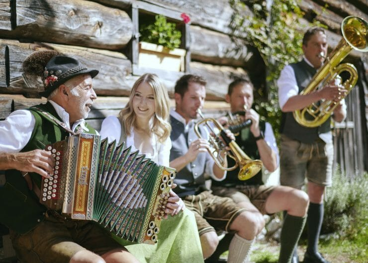
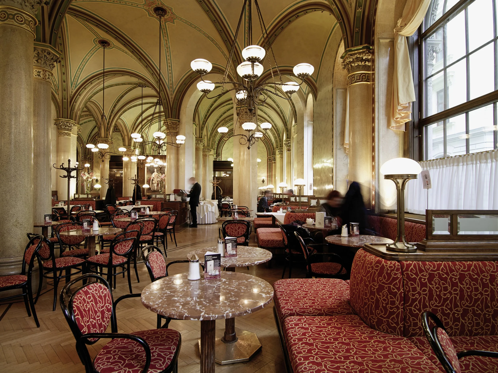

Austrian Culture
Austria has a long and rich musical tradition that shapes its national identity. Folk dances such as the Schuhplattler and the Ländler are deeply rooted in rural Alpine regions, often performed at local festivals and celebrations. Traditional clothing like the Dirndl and Lederhosen is still worn proudly today, especially during holidays or village gatherings. Music has always held a special place in Austrian culture, from rural folk songs to the famous Viennese waltz, which continues to be danced at balls and celebrations across the country.

Austrians proudly celebrate their heritage through traditional clothing and lively festivals. The Dirndl and Lederhosen are still worn, especially during events like the Almabtrieb (cattle parade), harvest festivals, and regional celebrations. Folk music, dancing, and food stalls fill city squares and mountain villages. These traditions, passed down for generations, blend history with community pride.

Austrian cuisine is a unique blend of Central European flavors, known for dishes like Wiener Schnitzel, Tafelspitz, and hearty Alpine meals. But what truly defines Austrian daily life is its coffeehouse culture. Traditional Viennese cafés offer a place to relax, read, and enjoy pastries like Sachertorte and Apfelstrudel. These cafés are calm, elegant spaces where people gather to talk, reflect, or simply enjoy quiet time — a cultural habit that has existed for centuries and remains an important part of Austrian social life.
